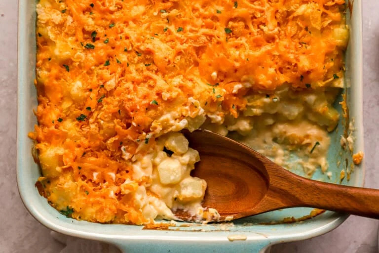

Potato Casserole

Description
Make those potatoes go the extra mile with this creamy, cheesy potato casserole! Fit to serve a crowd,
this potato casserole recipe is comfort food at its best. The crunchy, cheesy topping is a little sweet,
a lot savory, and makes this the perfect side for Easter, Thanksgiving, or Christmas.
Diced potatoes are blanketed in a sauce made from cheddar cheese, milk, and sour cream; seasoned with
onions and garlic; and topped with crunchy corn flake cereal. It's the ultimate cheesy, creamy, and
crunchy side dish. So grab a 5 lb. bag of potatoes and get cooking!
Nutrition
- Serving: 1
- Protein: 16 g
- Fiber: 4 g
- Calories: 459 kcal
- Fat: 22 g
- Carbohydrates: 51 g
- Sodium: 615 mg
Ingredients
Here are the things you will need to get before making this dish:
- 3 lbs. Yukon gold potatoes
- 1/4 cup butter
- 1/2 onion
- 2 cloves garlic
- 1/2 tsp salt
- 1/4 cup all-purpose
- 2 cups milk
- 3 1/2 cups extra sharp cheddar cheese
- 1/2 cup sour cream
- 1 cup crushed corn flake cereal
Steps
- Preheat the oven to 375°F. Peel and dice the potatoes, finely chop the onion, and mince the garlic.
- Add the potatoes to a large pot of water. Bring to a boil, cooking for 8-10 minutes until fork tender.
Strain in a colander. Then, transfer the potatoes to a greased 9x13 casserole dish.
- While the potatoes are boiling, melt the butter in a large saucepan or pot over medium heat.
- Add in the onion and salt, and cook for a few minutes until softened. Add in the garlic and cook for
a minute. Then, stir in the flour.
- Slowly pour in the milk while whisking to incorporate.
- Add in 2 cups of cheese and the sour cream. Stir until melted and incorporated.
- Pour the cheese sauce over the potatoes. Gently combine until the potatoes are fully coated.
- Top with the crushed cereal and the remaining 1 1/2 cups of cheddar cheese.
- Bake for 20 minutes until the cheese is bubbly.